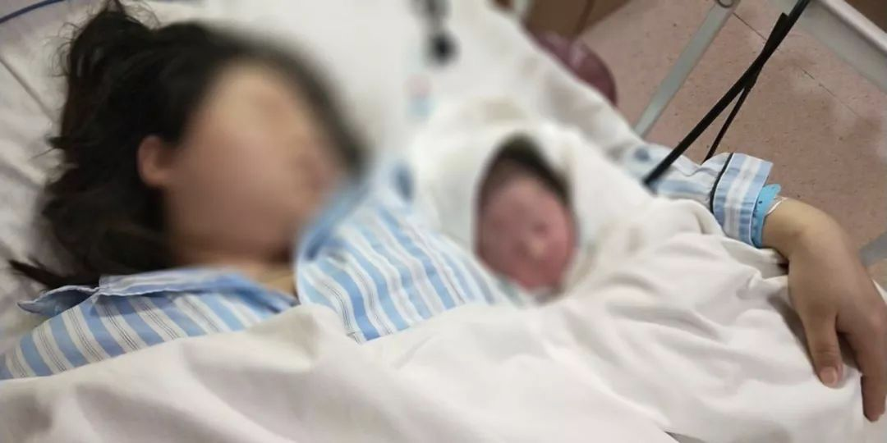

武汉病人：以家庭为单位的患者越来越多，去殡仪馆也得排队
原文链接 备份链接 杨晨还在等通知。他在等待“十号令”带给他以及他的家庭命运的转机，他是一位“武汉病人”的家属。 让他有所期许的“十号令”，是2月2日发出的。按照“十号令”的要求，自通告发布之日起，对全市经发热门诊诊断有肺炎症状的发热病人 …

预产期临近的产妇，是这次新冠肺炎防疫中极易被忽视的群体，她们无法脱离医院环境，极易被感染，牵涉到两条生命。在疫区，一些产妇和家人在迎来新生命的欣喜中，也面临着生死考验，同样被考验的，还有仅仅只有几天大的婴儿。
 生死门
生死门
1月28日早上，一辆救护车把熊易和妻子送到武汉市第三医院光谷院区。护士走在前头，带领熊易和妻子去办理入院，护士的防护镜里满是雾气。
隔离病房外的门厅已经挤满了办好住院证，却因床位紧张而无法入住的疑似感染者。大多是7、80岁的老人，年纪最小的看起来也在50岁以上，有人坐在行李上等空床位，还有人因无法入住正在和医护人员吵架。
熊易妻子是高度疑似感染产妇。却因此，幸运地分得一个隔离单间，他申请陪护，同妻子住了进去。眼前情景悲凉不忍看，焦心的熊易牵着妻子，穿过一双双同样焦灼却复杂的眼睛。
两天前的夜里7点，妻子在湖北省妇幼保健院进行了剖腹产，诞下5斤8两的健康女婴。次日早6点，妻子开始发热。护士帮妻子测了2次体温，第一次是37.6度，隔一阵再测，体温又降回正常。当时，熊易和妻子都没意识到这可能是新型冠状病毒感染的症状，以为只是产后第二天抵抗力下降导致的暂时性发热，但为保险起见，妻子还是去拍了肺部CT。
下午2点，熊易拿到CT诊断报告，提示妻子的肺部下方有小面积磨玻璃状阴影。医生让熊易先带妻子回去等着，待会儿会去病房找他详细讲解。
接下来是6个小时的熬人等待，熊易在走廊里焦灼渡步，听到有人交谈，说什么“双肺感染要转院”。他有点慌，拿着妻子的诊断报告，开始挨个楼层去找医生。晚8点，熊易终于在另一间病房门口见到了医生，说明情况后，医生判断妻子高度疑似新型冠状病毒感染，要立即办理转院，并进行隔离。
当晚，新生儿被爷爷带回家，熊易自己也去查了个肺部CT，万幸并无病变。转院途中，熊易从救护车窗朝外看，空荡的大街让他有些恍惚。这对父母刚刚迎来新生命，又将面临生死考验。

受访者供图 | 熊易的妻子与宝宝
因为核酸试剂盒短缺，妻子暂时无法确诊。这成了一种薛定谔式的安慰，除了发热，妻子暂无干咳、腹泻等其他感染症状，熊易侥幸地想，或许肺炎的事只是误会。偶尔闲暇，熊易就在心中竭力回溯，妻子沾染新冠病毒的可能环节。
最有可能感染的日子是1月21日。当天，熊易的父亲突然发烧，伴随着腹泻，他带父亲去中山医院，做了除肺部CT外的其余十几种检查，没有查出任何异样。现在回想，或许在那个时候，妻子就已经被感染了病毒。

流产妈妈群里的互助
毛小安给未出生的孩子起名“壮壮”，期待孩子能顺利降生、身体强壮。怀孕21周的她，家在武汉市江汉区，目前被视为此次冠状病毒疫情爆发“原点”的华南海鲜城就在这里，距离她家约5公里。
毛小安患有非典型抗磷脂综合征，由于自身免疫系统的反应危及胎儿，她需要在医生指导下，每天在皮下注射低分子肝素钠注射剂、口服阿司匹林来保胎，一旦停药，随时可能胎停。因此，毛小安高隆的肚皮上，连起了成片注射针剂的淤青痕迹。
每周，毛小安需要到省妇幼面诊，让医生根据她的检查结果，调整接下来一周的“肝素”注射量。孕程初期，她遵医嘱，每天打一针“肝素”，后来，在例行问诊时发现肝功能异常，医生旋即将她的注射量调整为两天打3针。到怀孕第八周时，毛小安在每周产检时发现保证胚胎正常发育的HCG数值过早回落，医生旋即加大她的“肝素”注射量，一天两针。
得知省妇幼复发性流产门诊停诊的消息让她不安。一方面，她无法通过每周一次的门诊精准调整药量，再则“肝素”紧缺——那是处方药，一般状况下，只有患者带着医嘱才能到药房取到药。
春节前，毛小安通过网络渠道购入了一批“肝素”，约一周的注射量。“封城”后的武汉，新陈代谢逐步慢了下来，物流不知何时也停了，网购“肝素”的渠道也被封锁。门诊开诊遥遥无期，她不得不省着点打，由一天两针改为两天三针，尽量减少针剂的消耗量，直到重新开诊的那天。
减少注射量之后，新的担忧接踵而至——胎儿会不会由于药物剂量不够，再次死去？失去医院专业仪器的辅助，毛小安每天在家中用特地购置的胎心仪听胎儿的心跳，每天晚上，她都坚持要感受到胎儿在腹中踢她才肯睡去。
这种捉摸不定的感觉令毛小安焦虑。她总是不住地想，自己和宝宝能不能熬到顺利生产的那一天。2018年9月，尚不知自己罹患该症的毛小安，第一胎在孕期27周发生胎停，她被推进产房引产。那是一次令人绝望的“生产”，毛小安承受着和隔壁的产妇类似的痛苦和风险，可等待被接生的孩子已在她的肚子里死去。
封城后，各个孕妇群的氛围变得紧张，每位孕妇都怕自己是在感染潜伏期，打个喷嚏都觉得自己“中招了”。不断有真假难辨的消息传出，说某医院有孕妇感染了肺炎，瞒着没说，连着做了几天胎心监护，还办理了住院待产。当晚，孕妇发烧，医生连夜将病房腾出来消毒，据说从1月30日起，所有产妇入院待产，都要做肺部CT。
这样的传闻多了，孕妇们大多不敢去医院产检，担心会交叉感染，把病毒带给肚子里的伢。以往这些孕妇群都是“一次性”的，孕妇生产后便会退群，去加新的宝妈群。现在，每天都有新的孕产妇进群，希望能获知更多可靠的消息。
1月30日，毛小安给一名家住黄冈市的孕妇寄去了三种药片：二甲双胍、雌激素和地屈孕酮。这是怀孕早期的孕妈服用的药物，特殊时期，400余人的复发性流产妈妈群里，每天都有准妈妈因家中保胎药物告罄而求助。安全度过孕程初期的准妈妈们，会将以前吃剩的药物匀出来，用快递寄给急需服用的姐妹。而“肝素”极度稀缺，大部分人都需要通过减少注射量来延长使用周期，很多人自身难保。
碰到有姐妹突然胎停，在这种特殊的时刻，是否有人能及时发现并抢救她们？答案不确定，就有可能造成一尸两命的悲剧。这个话题过于不祥，毛小安只是默默地想，不敢与其他人讨论。

曲折漫长的生产之路
1月23日，对在黄冈老家探亲的许冰冰来说，是生产计划彻底被打乱的一天，返回武汉的路被一点一点关上。
一开始，许冰冰通过新闻得知武汉封城的消息。随后，她留意到同事群里在讨论，进出武汉的高速路口都封闭了，有的人离开武汉，走小路绕了很久：“当时封城，只是觉得不能出来，没想到后来进去都难。”
她打开电子地图，以家里住的小区为终点搜索路况。以往从武汉回老家，开车需要一个半小时，而实时更新的电子地图显示，返回需要绕路，时间和路程都多了一倍。随着宣布封闭的道路越来越多，之后的几天，许冰冰每每在电子地图上搜索返回武汉的路，路程就可能更长几分。
1月18日，许冰冰到医院进行每周一次的孕晚期常规检查时，医生告诉许冰冰，胎儿已经部分入盆，那是胎儿在羊水和胎膜包围中，慢慢转为头部朝下、臀部朝上的姿态。根据产检结果判断，许冰冰的生育时间在1月26日之后。这意味着，1月26日之后，许冰冰每一天都要做好孩子降生的准备。
事实上，临产前最后的准备从那时就开始了。许冰冰做好了接下来的日程安排：1月22日跟丈夫回到黄冈市镇上的老家过年，1月26日返程，做最后一次产检，随后等待孩子降生。
1月25日，许冰冰通过新闻得知，武汉市内开始进行机动车限行：“限制机动车出行，我就算过去了也不一定能去医院。”在准妈妈群里，这个消息引发了惶恐。有人打电话到居委会去询问，得到的答复是，居委会将准备转车接送病人，但尚未到位，且不是24小时待命。
接着，有人提议，紧急情况下，可以拨打120，请求救护车送医。但特殊时期，即使知道救护车每次接送一趟病人后都会消毒，在准妈妈的群里，也很少有人敢冒这个险。这个警报，直到有人提出，生产是特殊情况，应该能得到放行，才得以解除。
对许冰冰来说，此时的武汉城内变数太大，即使大费周折回到武汉家中，也可能无法顺利到医院生产。她决定做两手准备，在黄冈老家寻找适合生产的医院，以备不时之需。
此前，她对第一个孩子的到来有着许多想象，譬如，那床留在武汉家中，无法取回的淡蓝色襁褓。许冰冰在网上挑了许多日才选中，拿到手后，经过水洗和晾晒，小心折叠好，小心翼翼地收进待产包里，想象着孩子会被裹在这张淡蓝色的襁褓里与她相逢，一切令人期待。
由于疫情，这些想象都落空了。许冰冰无法取回那床精心准备的襁褓，临时到镇上买了一床亮橘色的襁褓，原本医院让准备两身，由于款式老旧，许冰冰挑不出第二件，因而作罢。
受访者供图 | 许冰冰在老家临时购买的襁褓
此外，由于可能被迫要在黄冈生产，许冰冰担心无法领到武汉的生育津贴。她上网查询，发现武汉现行的生育津贴报销制度，如果要在异地生产领到生育津贴，需要她提前带着资料到有关部门提交，申请异地生产。
特殊时期，时间明显来不及。她打电话到社保局咨询，无奈由于春节假期，电话无法拨通，她的疑惑暂时无人应答。
2月1日，许冰冰仍在搜索回家的路程，电子地图显示路程耗时5小时54分，始终挂着“终点限行，无法避开”的提示。

命运漂流的新生儿
交通管制、部分道路封锁的防疫政策，还未来得及针对孕、产妇群体作出变通措施，她们急迫的用车需求难以被照顾周全。有位产妇的预产期已经过了4天，随时可能破水，社区派车流程繁琐，最终，丈夫直接开自家的车带她去医院待产。
疫情正在加重，熊易从医护人员们的防护装备就看得出。在隔离病房住了3天，医护人员换了3种颜色的防护服，一次比一次裹得密实。有好几次，熊易从背后喊护士没能得到回应，他猜测裹在厚厚的防护服里，她可能根本无法辨别声源的方向。
住进隔离病房当晚，妻子退烧了，还下床走了两圈，精神状态不错。熊易挺高兴，但第二天上午醒来，妻子又开始发烧。医生开了两盒莲花清瘟胶囊，叫熊易和妻子勤用热水洗手，不要离开病房，除此之外，暂未进行其他诊疗方案。
隔离病房里没有甜言蜜语。妻子担心把病毒传染给熊易，两人单独相处时，也都戴着口罩。熊易安慰妻子，轻症感染是可以自愈的，只有身体机能差的人才会死，自己身体好，不怕死。夜里，妻子忽觉呼吸困难，开始有了腹泻症状。

受访者供图 | 正在隔离中的妻子
初六一早，父亲打来电话，说自己前夜发烧了。熊易心里一沉，叫父亲赶快去医院拍肺部CT。经诊断，父亲双肺感染，因医院没有空余病床，只能居家隔离。熊易立即打电话给母亲，让她把宝宝抱到自己的房间。妻子疑似感染后，他将情况上报给了社区，让工作人员帮忙给房间消毒，他相信自己的房间目前是安全的。
经过几天隔离，熊易和妻子已不再害怕病毒如何在自己身上发酵，宝宝的安置之路悬而未决，才真正让这对父母发自内心地恐惧。
母亲是父亲的密切接触者，现在虽无感染症状，但也难保是在潜伏期。熊易害怕，若两位老人都不幸感染，刚出生4天的女儿将无人看顾，家里有正在隔离中的高度疑似感染者，有哪个护工愿意冒险来照顾宝宝。
熊易模仿这几天在网上看到的各式求助信息，在朋友圈连着发了6条求助消息，因为太着急，几次将“初六”打成了“初五”。
有人将熊易的朋友圈截图发到了视频软件上，获得了几十万点赞，求助信息很快扩散，一整天，不断有电话打来，提出各种解决方案，又因为封城、封路等原因难以实行。
熊易就职公司的领导，提出帮忙联系市妇联开特批函，用传真发到熊易丈母娘家所在的咸宁市，再打印出来，找辆车，开上高速送丈母娘将孩子接回家。但武汉到咸宁市两小时多的车程，熊易担心，漫长的路途会增加宝宝的感染几率。
妻子在隔离病房哭，父母在家里哭，熊易感到绝望。父亲和母亲分别隔离在家中两间卧室，日常沟通只能通过喊话，眼下，他们也只能在各自的空间流泪，无法安慰对方。
次日下午，终于有好消息传来。公司帮忙联系了一家医院，如果老人身体状况不好，会派车把宝宝送到新生儿病房，老家的防疫部门也会派车，送熊易的妹妹来武汉照顾宝宝。
命运漂流的新生儿暂时有了最优安置方案。尽管熊易心里清楚，计划也许仍抵不过变化。晚上，终于放松下来的熊易和妻子给母亲拨了通视频电话，屏幕一端，宝宝正恬静地睡着。妻子有过两次流产经历，曾为未能降于人世的胎儿取过几个名字，其中一个，在今年宝宝出生后被正式使用。
这位诞生于鼠年伊始的宝宝名唤静姝，寓意是娴静美好。在几十万陌生人为她着急的两天里，她不哭不闹，一直安安静静的，就像她的名字。
*文中部分人名为化名。
撰文 | 刘妍 温丽虹

原文链接 备份链接 杨晨还在等通知。他在等待“十号令”带给他以及他的家庭命运的转机，他是一位“武汉病人”的家属。 让他有所期许的“十号令”，是2月2日发出的。按照“十号令”的要求，自通告发布之日起，对全市经发热门诊诊断有肺炎症状的发热病人 …
原文链接 备份链接 文/杜圆圆 编辑/单一 根据预测，新冠肺炎或将在一周后，迎来新的爆发期。从去年12月初被发现，到目前为止，疫情已经持续了两个月的时间。 从始至终，医护人员一直是最前线的逆行者。武汉这座刚崛起的新一线城市，成了全中国最惨 …
原文链接 备份链接 封城已过去一周，在这个谈武汉人、湖北人色变的时候，我们想要好好看一看他们。今天我们挑选的几篇读者来稿，围绕着湖北的武汉和黄冈，讲述他们在旋涡和风暴中心的日子。他们有些住在城市，有些住在乡村和小镇。环境的不同给了他们不 …
原文链接 备份链接 1月23日凌晨2点“交通封城”令公布时，张奇还在刷手机。 张奇是北京人。1月20日，他坐高铁到武汉来探望朋友。此前媒体已经零星有了关于武汉新冠肺炎的报道，而病例数据在20日急速增加了2倍，危重患者已经有44人。不 …
原文链接 备份链接 二月初七（2月29日）。 天又晴了。阴阴晴晴，有点像我的封城日记，开开封封。待在家里时间长了，不知以后出去还习惯否。甚至，还愿意出去否。今天邻居唐小禾老师发了一组东湖的照片，像是无人机所拍，说是近日的。空旷而寂静的东 …